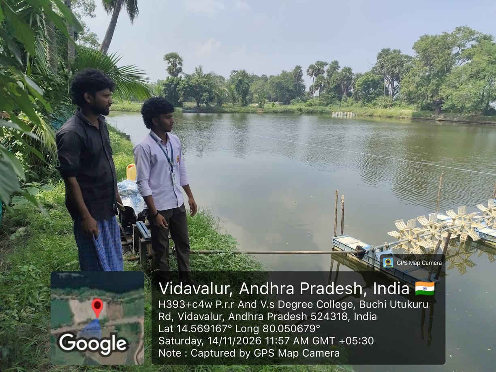
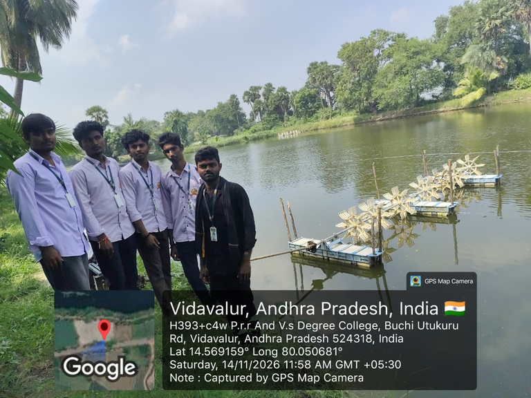
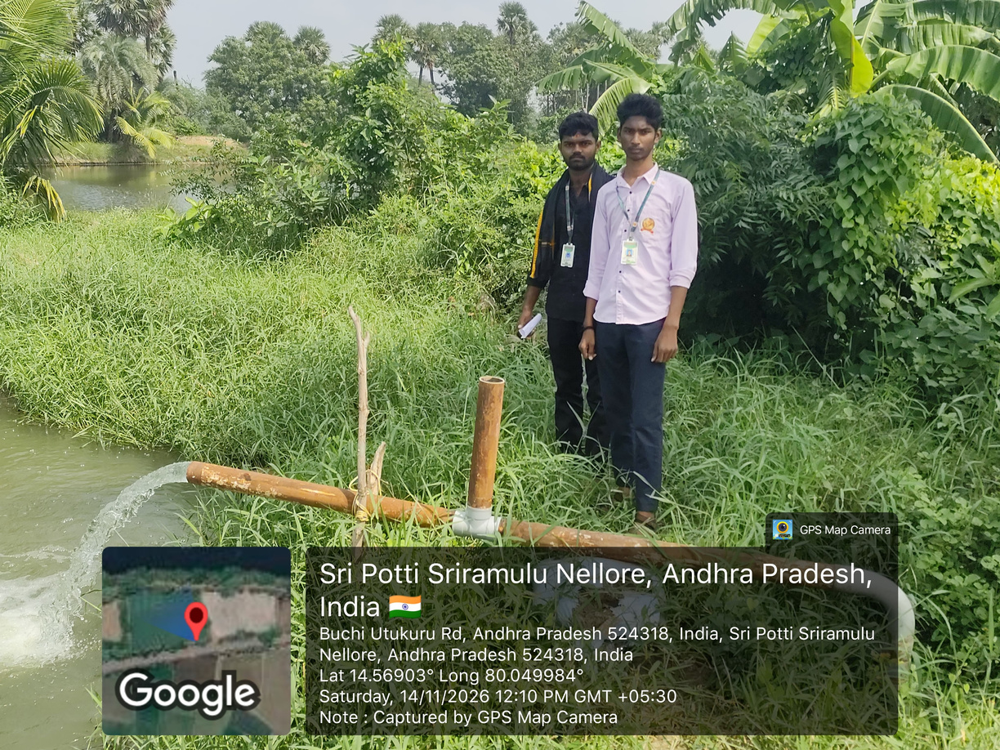

COMMUNITY SERVICE PROJECT · 2026–2027
Healthy ponds.
Stronger communities.
Practical knowledge for responsible fish farming, healthier ponds and confident rural communities.
Knowledge · Care · Community
OUR WORK AT A GLANCE
Small steps make a lasting difference.
08project weeks
06fieldwork weeks
01shared goal: sustainable fish farming
LEARNING IN THE FIELD
Built with farmers, one conversation at a time.
From village visits to pond-side demonstrations, the project connects practical aquaculture guidance with the people who use it every day.
Meet the project

